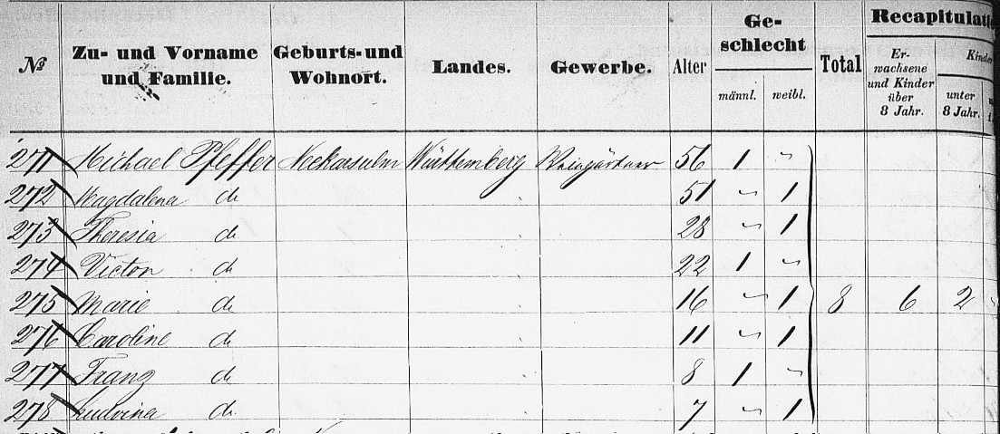
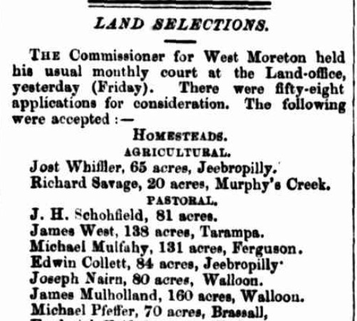
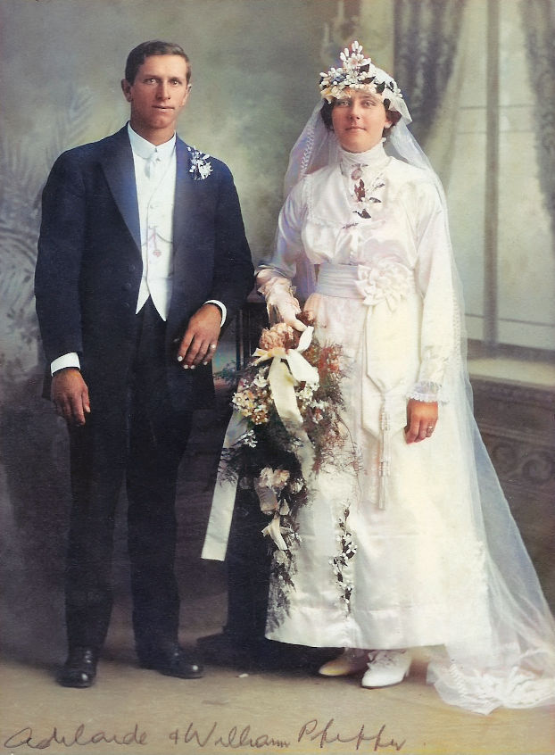
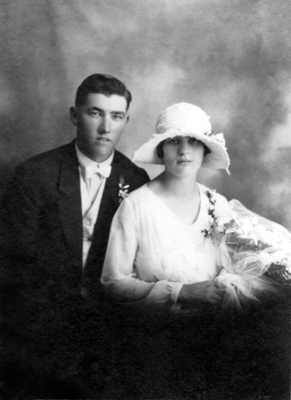

-
1863 The Pfeffer family on the Beausite;
Rudolph and Caroline, with their son, Joseph.1863 The Pfeffer family on the Susanne Godeffroy;
Michael and Magdalena, with their children, Theresia, Victor, Marie, Caroline, Franz and Ludvina.
Greetings from Neckarsulm
The Pfeffer Family
There's a saying in German, which stems from early seafaring days -
"Geh hin, wo der Pfeffer wächst"
(go where the pepper grows, meaning very far away)
There's another one from the Bible -
"Wachset und mehret euch..."
(grow and multiply)
And the Pfeffers did both of those things,
when they went far away to Australia,
where their family grew and grew.
(Francis Victor Pfeffer, for instance, had 10 children and 65 grand-children)
Joseph Michael Pfeffer
and Magdalena Elisabetha Krämer
Out of all our German ancestors and their families, it seems that only the Pfeffers and Schneiders came from the Kingdom of Württemberg in the south of Germany. The others had migrated from the far north, namely Holstein and Brandenburg.
The first of the Pfeffers to make it to Australian shores was Rudolph Anton Pfeffer who took his wife, Caroline (nee Schardon) and their one year old son, Joseph, on board the "Beausite" on May 25, 1863, arriving in Moreton Bay on September 4 the same year. Rudolph and his family were soon to be followed by his parents, Michael and Magdalena Pfeffer, along with many more of their children, on board the "Susanne Godeffroy", departing Hamburg September 19, 1863 and arriving in Moreton Bay in January of 1864. They came from a place called Neckarsulm, on the River Neckar, in the northern part of the Kingdom of Württemberg.
Yet, Rudolph's early life in the colony had not been an easy one and upon the arrival of his family he reportedly said "Why did you come out here to this country? – Now we all have a problem."
There was also a Benedikt Pfeffer from Neckarsulm who tried to get to Australia in 1864. He was one of the few survivors of the ill fated "Wilhelmsburg" which was due to arrive some time after the "Susanne Godeffroy". This was the self-same ship that Carl Krüger mentioned in his autobiography which he and his family failed to catch because it was already overcrowded. In the North Sea, the Wilhelmsburg was caught in a severe storm just like the Susanne Godeffroy but this time ran aground and was torn apart. Over three hundred people were on board but only a couple of dozen survived. It goes to show that sea travel in those days carried with it a very high risk factor, ofttimes lethal.
» Joseph Michael Pfeffer (1807–1877)
married Magdalena Elisabetha Krämer (1812–) in Neckarsulm, 09.02.1898
and they had the following children:
Peter Joseph Pfeffer ??.??.1832 –
*unknown17.01.1869
†Neckarsulmm. Maria Karolina Heck in Neckarsulm, 18.10.1859 Joseph Karl Pfeffer 25.10.1834 –
*Neckarsulm30.10.1834
†Neckarsulm(5 days old) Maria Theresia Pfeffer 15.10.1835 –
*Neckarsulmunknown
†unknownm. George Schindel in Brisbane, 22.01.1864 Maria Walburgis Pfeffer 22.09.1837 –
*Neckarsulm31.01.1848
†Neckarsulm(10 years old) Rudolph Anton Pfeffer 13.10.1839 –
*Neckarsulmunknown
†unknownm. Maria Karolina Schardon in Neckarsulm, 18.05.1863 Francis Victor Pfeffer 18.12.1841 –
*Neckarsulm16.06.1922
†Kalbarm. Frederike Christine Schulz in Kalbar, 05.06.1872 Maria Helena Pfeffer 10.06.1844 –
*Neckarsulm25.11.1852
†Neckarsulm(8 years old) Maria Clara Pfeffer 07.09.1847 –
*Neckarsulmunknown
†unknownmarriage status unknown Maria Louisa Pfeffer 04.02.1850 –
*Neckarsulm16.11.1852
†unknown(2 years old)/td> Maria Karoline Pfeffer 05.12.1852 –
*Neckarsulm22.09.1919
†Ipswichm. Jacob Graf in Fassifern, 09.09.1880 Franz Anton Pfeffer 24.04.1855 –
*Neckarsulmunknown
†unknownmarriage status unknown 
Adjoining lands of Johann Heinrich (Henry) Schneider and Francis Victor Pfeffer in Kulgun just below Roadvale. The area came to be known as "Schneiders Road" which was the name of a new Rail Station, later to be renamed Kulgun.
Land Selection acceptances (Brisbane Courier)
Francis Victor Pfeffer
and Friederike Christine Schulz
New Lands
On the 5th of July, 1869, Michael Pfeffer had his application for Land Selection of 70 acres at Brassall accepted. Two years later, his son, Francis Victor later known simply as Victor, took up 50 acres of pastoral land at Walloon.
Rumour has it (» from the writings of Hugh Schneider) that Henry Schneider and Victor Pfeffer formed a friendship when they worked together at Clermont Station, and from that association they became the first two settlers at Kulgun. Indeed as the map on the far right shows, they took up neighbouring land selections around the railway line.
On June 5, 1872, Victor married Friederike Christine Schulz who had only arrived in Queensland two months earlier. Friederike's sister, Ernestine (our 2x great-grandmother) later married Johann Friedrich Wilhelm Pieper, a neighbour of Henry and Victor. Victor's youngest son, William married Ernestine's grand-daughter, Adelaide Pieper.The Family of Francis Victor Pfeffer (seated, center) and his wife Fredericke Christine (nee Schulz) seated to his left
"The Family Gathering" 26.9.1912 - The Day of Ellen's Wedding
BACK ROW L-R: Gustav 30 and Katharine 25, August Schossow 40 and Johanna 36, Francis Victor Jr. (Frank) 33 and Emilie 32, Inset - Adelaide (a few years later but would have been 16 then) who married William, seated in the front row.
MIDDLE: Magdalena (Lena) 28 and Fred Dieckmann 33, Frederick 35 and Auguste 32, August Freiberg 24 and Ellen 21 (Bride and Groom), Otto 23 and Hilda 25, Charlie Sinn 31 and Mary 26.
SEATED: Francis Albert 39 and Martha 36, Francis Victor 70 and Friederike Christine 61, William 19.» Francis Victor Pfeffer (1841–1922)
married Frederike Christine Schulz (1851–1922) in Kalbar, 05.06.1872
and they had the following children:
Francis Albert Pfeffer 10.09.1873 –
*Haigslea28.12.1958
†Boonahm. Martha Emilie Heit in Obum Obum, 26.11.1896 Johanna Pfeffer 24.02.1876 –
*Haigslea24.03.1954
†Kalbarm. August Christian Friedrich Schossow in Qld, 10.10.1895 Frederick Pfeffer 23.06.1877 –
*Kirchheim
(Haigslea)25.01.1936
†Charlwoodm. Auguste Dorothea Richter in Ipswich, 26.04.1899 Francis Victor Pfeffer 12.08.1879 –
*Kulgun05.06.1952
†Wynnumm. Emilie Louisa Krueger in Charlwood, 20.02.1901 Gustav Pfeffer 08.03.1882 –
*Kulgun11.11.1945
†Qldm. Katherine Krueger in Charlwood, 24.02.1906 Magdalena Pfeffer 04.03.1884 –
*Qld17.07.1958
†Ipswichm. Friedrich Wilhelm Dieckmann in Kulgun, 28.09.1904 Mary Pfeffer 25.09.1886 –
*Kulgun17.12.1962
†Qldm. Carl Sinn in Kulgun, 23.03.1910 Otto Pfeffer 10.11.1888 –
*Kalbar29.06.1972
†Qldm. Hulda Ellen Huth in Teviotville, 16.11.1910
m. Margaret Sievers in Qld, 14.12.1922Ellen Pfeffer 26.12.1890 –
*Qld14.04.1980
†Qldm. August Herman Freiberg in Kulgun, 26.09.1912 William Pfeffer 22.07.1893 –
*Kulgun06.06.1961
†Redcliffem. Adelaide Alvena Pieper in Ipswich, 04.09.1915 (This biographical information is abbreviated from the 1982 work of Collin, Selwyn and Allan Pfeffer entitled "Pfeffer Trials and Triumphs, The Story of the Pfeffers from Neckarsulm, Germany")Francis Albert Pfeffer (Albert) married Martha Emilie Heit at the home of her parents in Obum Obum. Afterwards they settled at Charlwood on the farm bought for Albert when he was 18 by his father, Victor. Altogether the couple had 10 children. Another farm was bought at Aratula eventually being taken over by their eldest son. After 57 years of married life, the couple retired to a house they bought in Boonah.Johanna Pfeffer married August Christian Friedrich Schossow at her parents' home at Kulgun. After their marriage the couple settled on August's father's farm at Engelsburg, which they later owned. There they took on mixed farming which they managed for the fifty years of their married life with the help of their family of seven children.Frederick Pfeffer (Fred) married Auguste Dorothea Richter at the St Paul's Church of England in Ipswich. They then settled on a farm at Charlwood which Frederick had bought near to his brother Albert. After 37 years of married life on the farm, Frederick passed away in 1936 but Auguste managed to maintain the farm for another 12 years with the help of their 12 children. She then moved to Kalbar until passing away in 1971.Francis Victor Pfeffer (Frank) married Emilie Louisa Krueger at her parents' home in Charlwood. After they were married, the couple settled in the Mt. Sylvia district near Gatton. In 1914 they moved to Maroon and in 1919 moved again, this time to Roadvale. In 1928 they took over the original Pfeffer farm at Kulgun but returned to Roadvale in 1934. Twelve years later they moved to Ormiston, then Manly and finally Wynnum. They had 10 children.Gustav Pfeffer married Katherine Krueger at her parent's home in Charlwood. Afterwards they settled on a farming property at Teviotville. In 1918 they moved to a fruit farm at Wellington Point which was later sold when they moved to Park Ridge to take up dairying. That too was sold when they moved to Mooloolah to grow sugarcane and bananas. They then quit farming and moved to Sandgate where Gustav worked for the City Council. Around 1938 they moved again, this time to Wynnum, at which time Gustav worked at a glassworks in South Brisbane. The couple had 12 children.Magdalena Pfeffer (Lena) married Friedrich Wilhelm Dieckmann in Kulgun. After marriage they first lived at Purga, then in Ipswich and then in Kalbar for a while before moving to Obum Obum where they settled for many years. Fred was a skilled carpenter and built many homes in the area. Lena became a keen poultry farmer. In 1950 the retired to Kalbar. Fred was apparently much appreciated for his delightful story-telling. Lena and Fred had 2 childrenMary Pfeffer married Carl Sinn (Charlie) in Kulgun, at the home of Mary's parents. After they were married, Mary and Charlie settled at Left Hand Branch near Mt. Sylvia about 20km from Gatton. There they worked hard at farming, eventually prospering and raising their two children. Their son George was married in 1939 and took over the farm allowing them to retire in Gatton.Otto Pfeffer and Hulda Ellen Huth were married at her parents' home in Teviotville. After marriage they had a property at Mt. Frazer where Otto did some butchering and delivered meat around the district. He then hauled pine to local mills in the Blackbutt area and later at Mt. Frazer where he cut and delivered his own timber. Tragically during that work Hulda was hit by a falling tree and died from her injuries the next day in Boonah Hospital. Otto sold up and cut sugarcane in northern Queensland and worked on shipbuilding for Evans Deakin. He met his second wife Margaret Sievers in Brisbane. There was one child from the first marriage and five from the second.Ellen Pfeffer married August Herman Freiberg at her parents home in Kulgun. The couple bought a farm at Tarome where they did mixed farming. In 1946 they sold up and moved to North Booval where they lived for the next eleven years. One year after selling that home and buying another at Silkstone, August passed away but Ellen stayed on for another ten years. She then moved into care at Colthup home where, seven years later in 1974 at the age of 83 she married Walter Austin who was one year her senior. Ellen and August had only one child.William Pfeffer (Bill) married Adelaide Alvena Pieper at the Ipswich home of Bill's sister Magdalena and her husband Friedrich Dieckmann. The ceremony was performed by Mr. Way, a Church of Christ minister. Since this couple is our great-aunt and great-uncle, Adelaide being the sister of our grandmother Alma (Pieper) Schneider, we have some further information and photographs available to us about them, some of which is contained in the following section.
William Pfeffer
and Adelaide Alvena Pieper
Wedding of William Pfeffer and Adelaide Pieper
Bill Pfeffer was a keen motorist and here he is up front of his Willys Knight, a car which was produced from 1914 to 1933 by Willys-Overland Company of Toledo, Ohio
» William Pfeffer (1893–1961)
married Adelaide Alvena Pieper (1895–1970) in Ipswich, 04.09.1915and they had the following children:
Beryl Anna Pfeffer 13.08.1916 –
*Kulgun03.05.1982
†Qldm. Stanley Charlie Naumann in Qld, 22.02.1936 Allan Leonard Pfeffer 12.09.1918 –
*Kulgun27.07.1983
†Qldm. Leona Hinrichsen in Qld, 01.05.1943 Dulcie Eileen Pfeffer 06.10.1920 –
*Qld03.03.2003
†Brisbanem. Arnold Arthur Goodwin in Qld, 25.03.1944 Ronald William Pfeffer 07.03.1924 –
*Qld29.01.1994
†Fig Tree
Pocketm. Ailsa Mae Murry in Qld, 17.01.1945 Lorna Joyce Pfeffer 01.07.1926 –
*Kalbar02.03.1998
†Redcliffem. Mervan Paul Mutzelburg in Qld, 05.10.1946
c.1924 Bill Pfeffer's Fernvale Store
c.1927 Bill Pfeffer's Bakery at Kalbar
(with little Ron pushing Lorna in a trolley)Seven year old daughter Dulcie's letter to the children's club run by a newspaper in 1928, mentions her father's bakery in Kalbar.
1932 Mr and Mrs W. Pfeffer sell their bakeries
1954 One of the Allan Pfeffer's bakeries was at Corinda (part of a newspaper advertisement)
Peffer's Bakeries
When Bill and Adelaide were married in 1915, Bill's father, Francis Victor, was already 73 and his wife, Friederike Christine, was 64. Immediately, the newly-weds moved in with Bill's parents, took up farming, and cared for the ageing couple until they both passed away in 1922. Around that time the farm became Bill's but by 1923, he was renting it out to some neighbours and had purchased a grocery store in Fernvale.
In 1925, Bill bought a bakery business in Kalbar, having sold his store in Fernvale to the previous owner of the bakery. Owing to Bill's hard work, the bakery business took off and went so well that he bought another bakery in Roadvale in 1931. Yet, the very next year, in 1932, Bill and Adelaide had sold both businesses and left for a tour of the Northern Rivers, followed by a short holiday in Sydney.
The Pfeffers then moved to Oakey where they bought and ran another bakery until 1937. They also owned bakeries in Murgon and Gympie which were run by appointed managers. In 1937 Bill and Adelaide sold their Oakey business and bought land in Redcliffe to build their "Premiere Flats", one of which was used as the family's new home, the others being rented out. More homes and properties were purchased in Redcliffe as well as farms in the Lockyer and Oakey districts.The Kulgun home of Bill and Adelaide Pfeffer
The children were involved in the baking business too. Bill's eldest daughter Beryl married Stan Naumann who had left his parents Templin farm to move to Oakey in order to become a baker and pastry cook. Eldest son, Allan also served his apprenticeship in Oakey and bought his own business in Gatton in 1940 at the age of 21. He married Leona Hinrichsen a few years later. Dulcie had worked in her parents bakery till eventually marrying Arnold Goodwin at which time they moved to Brisbane. Younger son, Ronald, joined the staff of the Bank of New South Wales after having studied at Toowoomba Grammar School. He also served for four years in the A.I.F in New Guinea and later became a Field Officer for the Queensland Housing Commission. The youngest child of Bill and Adelaide, Lorna, studied at Brisbane Girl's Grammar School, worked as a clerk at the Queensland National Bank and later made her home at Margate with her husband, the building contractor Mervan Mutzelburg.
Pfeffer's Golden Bread
In 1946, Allan and Leona sold their Gatton bakery business and bought another one in Corinda, which in 1956 was enlarged to have new equipment installed. In the early sixties, they bought nine and a half acres of land at Wacol in order to establish a large and well equipped bakery resulting in a huge step forward.
By the 1970s, Allan had taken over a number of bakeries in and around Brisbane and Pfeffer's Bakeries based at Wacol had become one of Australia's largest companies dealing in baked goods. Its brand name "Golden Bread" was to be seen in every supermarket and corner store for a long while and the company of the same name behind it was part of the larger concern of the Pfeffer consortium. This included Pfeffer Qld. Foods Pty. Ltd. and the Pfeffer Holding Company whose shareholders were all members of the Pfeffer family.
Complicating matters though, the Q.C.M.A (Queensland Co-operative Milling Association), the supplier of raw materials such as flour to Pfeffer's bakeries, had a court case involving Golden Bread claiming their debts to the Q.C.M.A. were so large that there was nothing left but to be taken over by the Q.C.M.A. In 1975 there was a petition filed as an appeal involving Maurice Roy Hutchison and Marie Margaret Hutchison, who together held 40 per shares in Golden Bread, as well as the Q.C.M.A. who held 20 per cent. The appeal though was dismissed with costs. The original case considered that together with the Q.C.M.A.'s 20 per cent shares of Golden Bread, there would be 60 per cent altogether with share values calculated accordingly. It came to light that the appraisal of ownership was not correct, for the Q.C.M.A. already owned 45 per cent of the shares of Pfeffer Qld. Foods Pty. Ltd. which in turn owned 40 per cent of the Golden Bread shares.
Sometime in 1976, the whole of their bakery business had been sold with Ron and Leona then settling at Corinda.
Photo Gallery
Dulcie, Beryl and Allan, the three eldest children of Bill and Adelaide Pfeffer
A young William Pfeffer
Esther Pfeffer, daughter of Francis Albert Pfeffer and Martha Heit
Esther Pfeffer with her husband, Charles Scholl, on their wedding day
Wedding photo of Norman Schneider and Ruth Pfeffer, daughter of Francis Victor jr. and Emilie Krueger
Wedding of Beryl Pfeffer and Stan Naumann

Adelaide and Bill Pfeffer with their first three children, Beryl, Allan and Dulcie.
Adelaide and Bill Pfeffer in 1959
About Us
We are the descendants of Anglo-Scottish-Prusso-Germanic Australian migrants who settled in the newly formed colonies of New South Wales and Queensland in the nineteenth century. The idea behind these pages is to present the stories and characters of those early settlers along with information about their origins, descendants, families, whereabouts and activities.There are often themes running through their struggles and achievements telling a tale of resourcefulness and hardships in an alien world. The paradox of Australia as an ancient and raw continent and as a 'New World' portrays a collision of ideals and realities yet still shows a continuity in how those people dealt with everyday life.